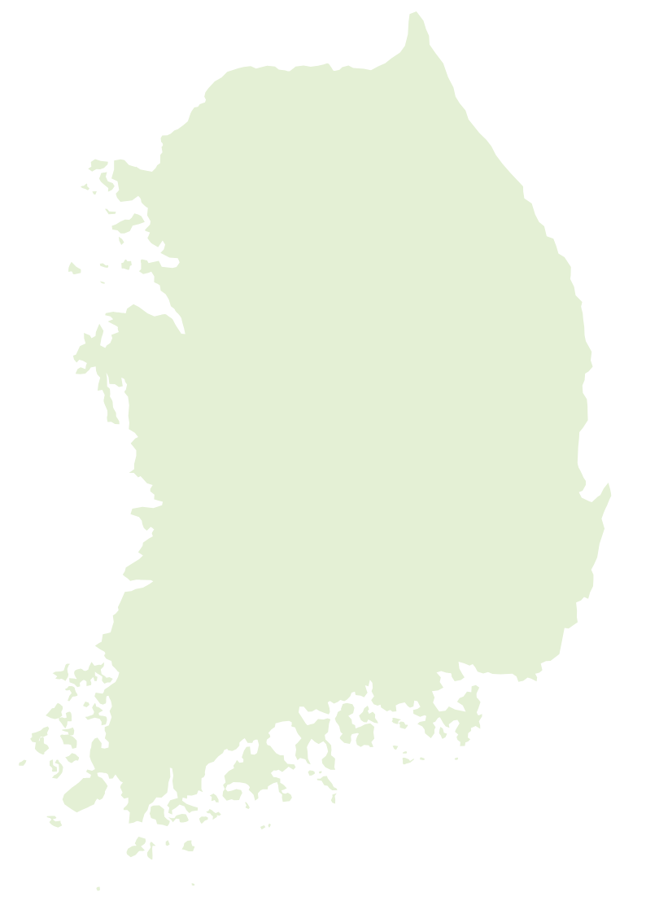

해나무한의원
네트워크
당신이라는
나무
에
따뜻한 해
를 비춥니다.
가까운 지점을 선택하시고, 고품질 의료 서비스를 받아보세요.

문산점
서대문점
구로점
남양주점
복정점
안양점
시흥점
능곡점
안산점
동탄점
청주점
전주송천점
전주중화산점
장수장계점
전국 지점 리스트
(14곳)
안산점
경기
경기 안산시 상록구 화랑로 501 304호
031-485-1073
동탄점
경기
경기도 화성시 동탄솔빛로 47
031-8003-3653
구로점
서울
서울 구로구 고척로 132 서정빌딩 3층
02-2685-1500
서대문점
서울
서울 서대문구 증가로 150 DMC센트럴아이파크 상가동 B201호
02-6953-1714
남양주점
경기
경기 남양주시 진접읍 해밀예당3로 60 호평프라자
031-529-7523
시흥점
경기
경기 시흥시 신현로14번길 2 태헌신관2차아파트 상가동 201호
031-315-7533
안양점
경기
경기 안양시 동안구 경수대로 426 301호
031-458-8575
청주점
충북
충북 청주시 서원구 분평로 36 4층 401호
043-283-9320
복정점
경기
경기 성남시 수정구 복정로 86 수전빌딩 2층
0507-1386-1075
능곡점
경기
경기 시흥시 능곡로 174 미래도프라자 4층
031-492-8275
문산점
경기
경기 파주시 문산읍 문향로 71 신성타워 303, 304호
0507-1425-7582
전주송천점
전북
전북 전주시 덕진구 솔내로 152 푸른시티 203호
0507-1402-6688
전주중화산점
전북
전북 전주시 완산구 안행로 185 2층
063-283-9997
장수장계점
전북
전북 장수군 장계면 한들로 113 2층
0507-1410-0187